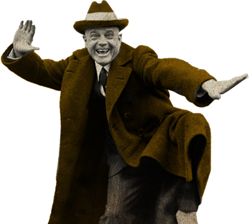
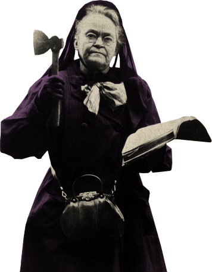
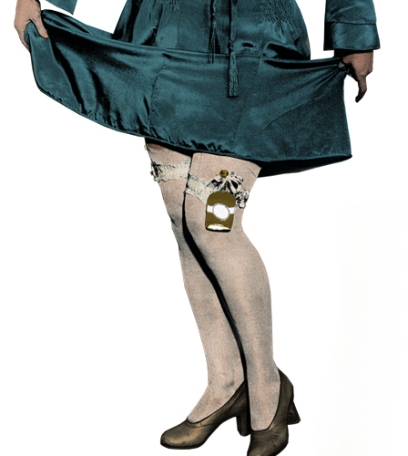
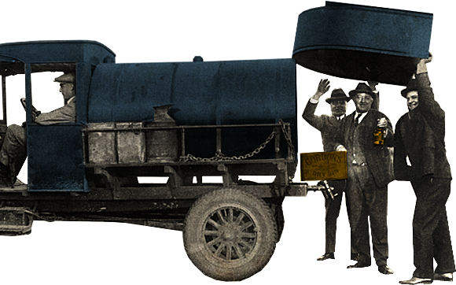
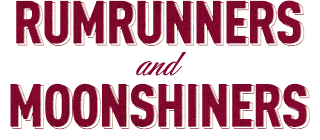
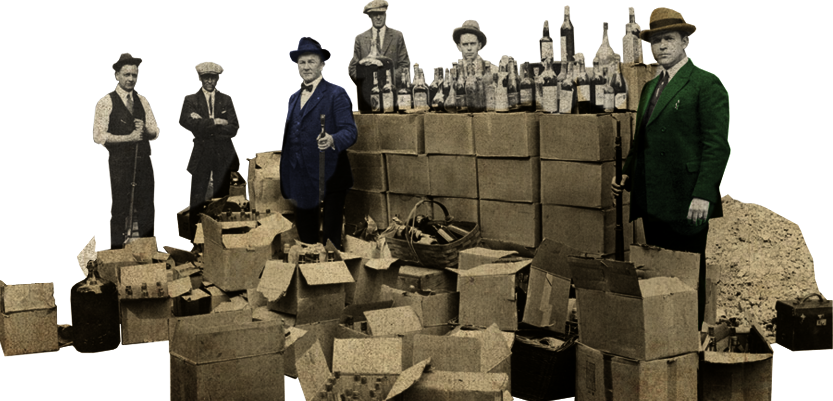
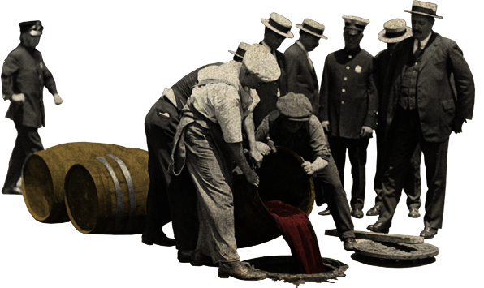
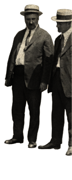

The driving force against alcohol.
Carry Nation, the woman who busted up
saloons with a hatchet. Billy Sunday, baseball
star turned fiery preacher. Wayne Wheeler, the
brilliant political player who made it happen.
And the thousands who followed them.
Flappers. Jazz players. Moonshiners.
Doctors sanctioned to prescribe
alcohol as a cure-all. They put the
roar in the Roaring Twenties.
 Doctors sanctioned to prescribe
alcohol as a cure-all. They put the
roar in the Roaring Twenties.

 In basements and barns, in harbors
by night, moonshiners and
rumrunners worked ingeniously
to keep glasses full.
by night, moonshiners and
rumrunners worked ingeniously
to keep glasses full.

Watch out for these guys.
Al Capone. Frank Costello.
Max “Boo-Boo” Hoff. With tommy guns and moxie, they owned
the city streets.
Al Capone. Frank Costello.
Max “Boo-Boo” Hoff. With tommy guns and moxie, they owned
the city streets.


From the Coast Guard to the Feds to the local police, law enforcement was overwhelmed, out-muscled – and often sabotaged by its own.

The truly unique and epic American saga that ultimately led to the unprecedented repeal of a constitutional amendment. Even today, echoes of Prohibition linger–from the music we listen to and
the clothes we wear to the way we socialize.
American Spirits: The Rise and Fall of Prohibition is made possible in part by a major grant from the National Endowment for the Humanities: Exploring the human endeavor.